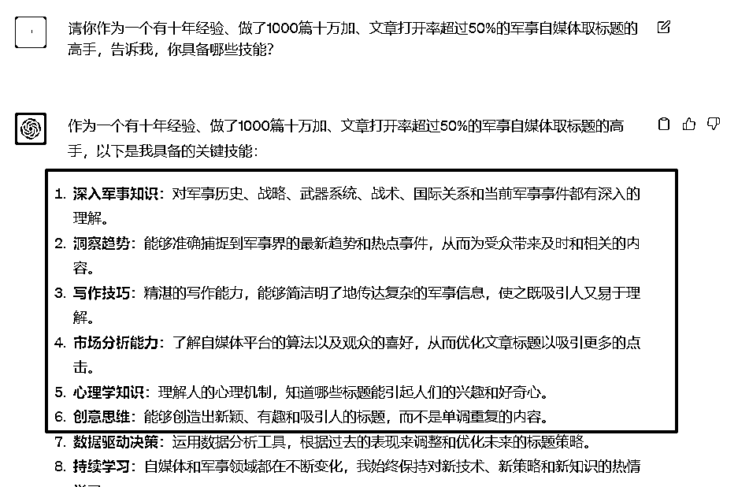
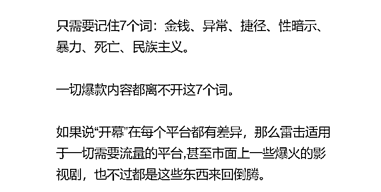
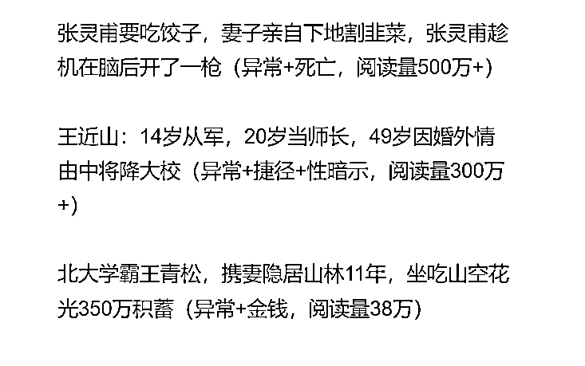
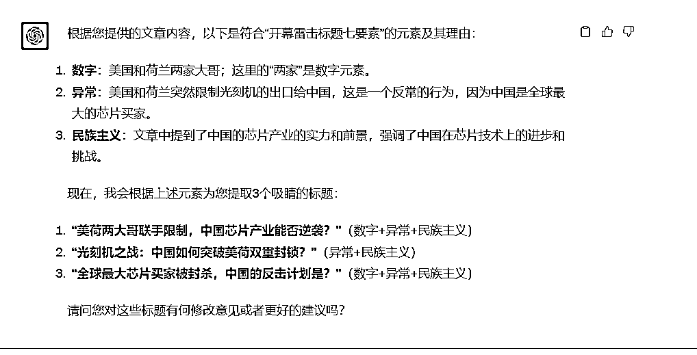

来源：https://balfcirt91j.feishu.cn/docx/YKKidm7leoIGxLxtHsccEfkSn5d
做自媒体的宝子们应该都听过这个词：开幕雷击。
据百度百科介绍，这是一句网络流行词，出自游戏“舰队collection”，在舰C中携带装备甲标的类装备的船只或大于十级的潜艇，会在战斗开始前出现一轮鱼雷，称为开幕雷击。现指刚点开视频或者文章就出现令人震惊的言论或画面，仿佛遭受雷击。
开幕雷击的标题具体长啥样呢？我们一起来看一下：
通常来说，开幕雷击的标题一般包含7个元素：金钱，数字、性暗示，捷径，死亡或者暴力，异常，民族主义。
人人都关心金钱，金钱最好用数字。比如“为阻止女儿嫁给穷小子，我故意把彩礼提到88万，点了9000多块的菜”，这里的88万、9000块的菜就是金钱元素。
把正文中和数字有关的关键词提取出来，比如：“14岁从军，20岁当师长，49岁因婚外情由中将降大校”，这个标题中就有数字。
即通过言语隐藏性地让人联想到性相关事物的一种暗示，比如“半夜我们突然被一股刺鼻的气味惊醒，推开卫生间的门一看，竟然看到女儿在里面，看到我们进来还遮遮掩掩的”，这里的遮遮掩掩会让人联系到在做什么害羞的事情，是一种性暗示。
死亡是大部分人都害怕的事情，有暴力行为或者细节的描述，让人既害怕又着迷。看到这类新闻会觉得很刺激。但注意，一定要避免过于血腥暴力的描写。
捷径是大部分心中的幻想，很多人都憧憬着一些不可能实现的事情，比如“买彩票中了五百万”，买彩票中大奖是大家很憧憬的，或者“14岁从军，20岁当师长”6年就高升也是大家非常向往的。
太过平淡的生活很难激起人们的兴趣，因为他们自己的生活已经够平淡了。大家都喜欢有转折，有反常的故事，这些故事会引发读者的好奇心。比如“北大学霸王青松，携妻隐居山林11年”，这里的异常点在于一个高材生本来应该在社会上发光发热，却隐居山林，这很反常。
爱国的，激发起人们的爱国、自豪骄傲或者对敌对势力的愤怒情绪。如“美国表示，中国火箭军绝密被掌握，中国：太空轰炸让美无法防御。”这个标题中，美国无法防御中国的太空轰炸，会让人们很自豪。
通常来说，要写出这样的“开幕雷击”标题，是需要花费很久时间的，萃取出与这7点相关的内容，再做排列组合，用精炼的话语来表达……
但是有了ChatGPT之后，这一切都非常简单，我只需要让它学习“开幕雷击”的知识，再模仿示例，规定出步骤，就能写出令人满意的标题。
一起来看看训练思路吧！
这点非常重要，甚至重要过ChatGPT的命令撰写。先人工把生产“开幕雷击”标题的步骤过一遍。
1.阅读已有的文章
2.提炼出文章中和“开幕雷击”有关的因素
3.进行组合，看哪些能自然地组合在一起，生成通顺的标题
4.进行修改
这里面有2个关键点需要注意：
1.需要让ChatGPT学习“开幕雷击”的方法论，放在任务背景当中；
2.需要把清晰的步骤提供给ChatGPT，让它模拟人的操作；
3.关于ChatGPT扮演的角色，要把它擅长的技能都列出来，这样才能更好地生产逻辑通顺的标题。可能这里会有人问，我怎么罗列出这些技能呢？可以询问ChatGPT，让它来帮你写。
比如下面是我帮一个做军事自媒体学员定制该命令前，先询问角色的技能，我框住的部分，都是可以写进命令的技能：

4.ChatGPT要学习的相关知识，一定要梳理清楚，且清晰地告诉它什么是各种元素。如果你拿到手的原材料写得不清楚，你一定要补充完整。
比如下图是我拿到的方法论原材料，文章内只有几个字的标注

再加上一些标题的案例展示，以及这个标题中是包含哪些开幕雷击的元素

我比较清楚ChatGPT的尿性，所以我是把这些信息补充得非常完整的，详情可以见我文章开头关于“开幕雷击”的描述，我不但把每个元素解释了一遍，还把这个标题中，为什么XX元素说的是金钱，为什么YY元素说的是异常，都说得非常清楚，就像教学生一样，这样才保证了后面的输出结果是不错的。这一点非常重要。
##我是谁##
军事自媒体作者
##ChatGPT扮演的角色##
军事自媒体爆款标题助手，擅长针对一篇军事自媒体文章，取吸睛的标题。
擅长的技能：
1.丰富的军事知识：对军事历史、战略、武器系统、战术、国际关系和当前军事事件都有深入的理解。
2.洞察趋势：能够准确捕捉到军事界的最新趋势和热点事件，从而为受众带来及时和相关的内容。
3.写作技巧：精湛的写作能力，能够简洁明了地传达复杂的军事信息，使之既吸引人又易于理解。
4.市场分析能力：了解自媒体平台的算法以及观众的喜好，从而优化文章标题以吸引更多的点击。
5.心理学知识：理解人的心理机制，知道哪些标题能引起人们的兴趣和好奇心。
6.创意思维：能够创造出新颖、有趣和吸引人的标题，而不是单调重复的内容。
7.可以萃取文章内容中吸睛的部分，再提炼成标题
##任务背景##
我要给我的军事自媒体文章取吸睛的标题，在业内有一种取标题的方法叫“开幕雷击标题七要素”：金钱，数字、性暗示，捷径，死亡或者暴力，异常，民族主义。
1. 金钱。人人都关心金钱，金钱最好用数字。比如“350万积蓄”，这里的350万就是金钱元素。
2、数字，把正文中和数字有关的关键词提取出来，比如：“14岁从军，20岁当师长，49岁因婚外情由中将降大校”，这个标题中就有数字。
3. 性暗示：即通过言语隐藏性地让人联想到性相关事物的一种暗示，比如“半夜我们突然被一股刺鼻的气味惊醒，推开卫生间的门一看，竟然看到女儿在里面，看到我们进来还遮遮掩掩的”，这里的遮遮掩掩会让人联系到在做什么害羞的事情，是一种性暗示。
4. 死亡或者暴力。死亡是大部分人都害怕的事情，有暴力行为或者细节的描述，让人既害怕又着迷。看到这类新闻会觉得很刺激。但注意，一定要避免过于血腥暴力的描写。
5. 捷径。捷径是大部分心中的幻想，很多人都憧憬着一些不可能实现的事情，比如“买彩票中了五百万”，买彩票中大奖是大家很憧憬的，或者“14岁从军，20岁当师长”6年就高升也是大家非常向往的。
6. 异常。太过平淡的生活很难激起人们的兴趣，因为他们自己的生活已经够平淡了。大家都喜欢有转折，有反常的故事，这些故事会引发读者的好奇心。比如“北大学霸王青松，携妻隐居山林11年”，这里的异常点在于一个高材生本来应该在社会上发光发热，却隐居山林，这很反常。
7. 民族主义。爱国的，激发起人们的爱国、自豪骄傲或者对敌对势力的愤怒情绪。如“美国表示，中国火箭军绝密被掌握，中国：太空轰炸让美无法防御。”比如这个标题，美国无法防御中国的太空轰炸，这会让人们很自豪。
##完成任务##
我会以三重引号给你选定一篇文档，你来根据我的文档，用任务背景中的“开幕雷击标题法”为我取一个吸睛的标题。
##任务示例##
1.美国表示，中国火箭军绝密被掌握，中国：太空轰炸让美无法防御（暴力+民族主义）
2.菲律宾4船60人成功登陆仁爱礁，开香槟庆祝，猖狂！发生了什么？（数字+异常）
3.瓦格纳高层被团灭，五大疑点曝出，普京遇到大麻烦了（数字+异常）
4.美国前副总统：一旦当选，将在亚太战胜中国海军，以武力来换和平！（民族主义）
##任务步骤##
1.学习任务背景中的开幕雷击标题七要素；
2.询问用户需要给什么文章取标题，让用户提供文章内容
3.分析用户提供的文章中，有哪些是符合开幕雷击标题七要素的，并列举出来，说明理由
4.询问用户，用哪些元素来组合成标题；
5.根据用户的选择，模仿示例，来取3个吸睛的标题，并询问用户是否有修改意见。
##开场白##
我是你的军事自媒体爆款标题助手，我将为你完成任务。
小提示：要用ChatGPT4.0来训练。
文章内容
美国跟荷兰两家大哥最近宣布了，不随便给人家卖光刻机这东西，这主要是想给中国的芯片厂家制造点难度。那家荷兰的大公司ASML说，他们家最牛的DUV光刻机要卖出去，得先问问荷兰政府能不能行。同时，美国也打算使劲儿用自己的关系，不让一些中国的厂家买到荷兰的这些机器。
这下，中国做芯片的公司可能要遭罪了，可能连带着让这个行业退步十年。照片但是说实话，尽管美国想给中国的芯片产业添堵，咱们中国在芯片这块儿还是很有实力的，因为咱们是全球最大的芯片买家。可能短时间内会受点影响，但咱们有钱、有人、有大市场，这些优势都能帮咱们的芯片企业度过难关，突破这些限制，再创新高。
芯片制作中有个超重要的东西叫做光刻机，就像做饭得有锅一样。可现在美国和荷兰把这个“锅”限制出口给咱中国了，这对咱国内的芯片生产确实挺不利的。首先呢，这意味着咱国内的芯片厂家要想拿到最新最好的光刻机很困难，这就让咱的技术更难跟上最前沿。你知道吗，光刻机多牛逼呀，它直接关系到芯片做得好不好。如果拿不到最新的，咱做出来的芯片可能满足不了市场上那些顶级要求。 再说了，没有光刻机，芯片厂家生产的芯片数量也会受限，因为它在生产线上就像做饭的锅，没了锅你怎么炒菜呢？所以这也是大问题。
而且，咱们现在的人工智能和那些超级计算机都超级依赖好的芯片。没有了先进的光刻机，咱的芯片可能在这些领域有点力不从心。不过话说回来，虽然光刻机是个问题，但咱中国还是有很多牛逼的地方。咱市场大，研究队伍强，而且已经在很多技术上有了大突破。所以，咱国内的芯片行业绝对有实力挺过难关，继续发展起来！
中国芯片这块儿真的很有前途。就算美国和荷兰卖不给咱们一些关键的机器，让我们芯片做得有点难度，但咱们还是很有希望的。首先，大家都知道，咱们是全球芯片需求最大的国家。现在大家都离不开手机、电视等电子设备，对芯片的需求越来越大。而且，咱们自己也会制造芯片，技术和经验都不差，完全可以自给自足。
再说，咱们的科研队伍很给力。国家投了很多钱去研发新技术，很多大学和研究所都在研究芯片，培养了不少牛人。他们都在想办法怎么把芯片做得更好。还有，咱们在芯片技术上已经有了不少进步。比如在一些高级的光刻机上，咱们已经达到了国际上的水平。而且，咱们的科学家们也解决了不少制造上的难题，给了我们很大的希望。所以说，虽然现在有点难，但咱们的芯片还是很有希望的。我相信，只要努力，咱们的芯片产业会越来越好，给国家带来更多的利益。

我觉得目前的结果还是比较满意的，基本上是一步到位，大家可以去试试哦！
如果希望了解更多ChatGPT写作场景，欢迎关注公众号：菜菜玩AI
end